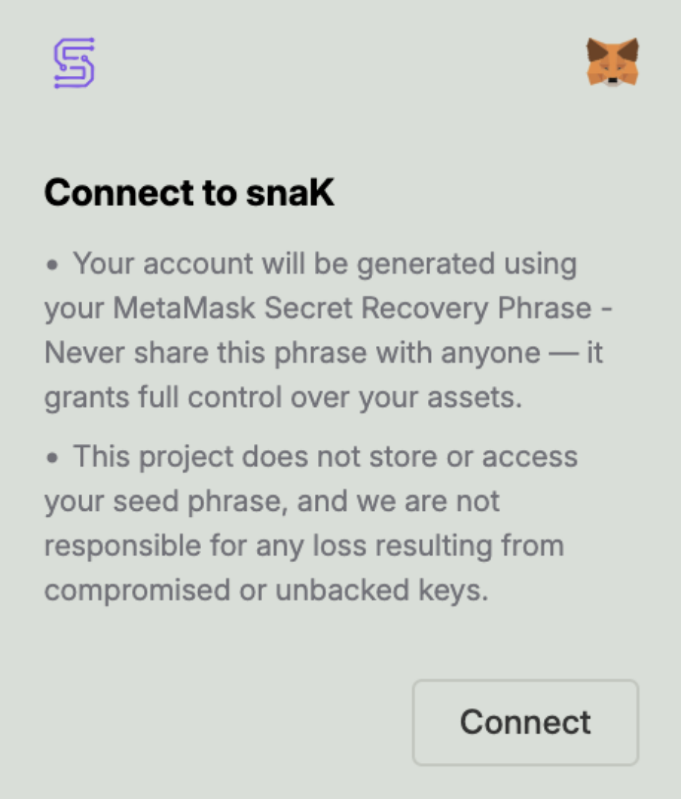
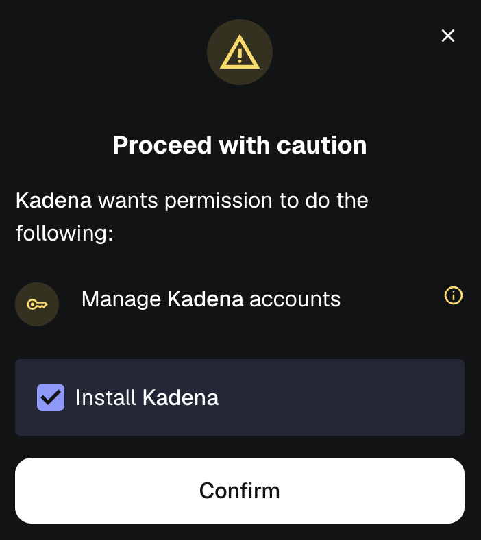

Kadena Wallet Snap by MetaMask
Overview
MetaMask is a popular Ethereum wallet and browser extension that developers can integrate into a variety of third-party applications. MetaMask Snaps is an open-source solution to enhance MetaMask’s functionalities beyond its native capabilities.
The Kadena Wallet Snap, initially developed by the Kadena Community and now maintained by Mindsend Datatech, enables users to interact directly with the Kadena blockchain without relying on traditional JSON-RPC endpoints, offering Kadena-native functionalities like sending KDA, performing cross-chain transfers, and retrieving account information.
What is a Snap?
MetaMask Snaps is an open-source framework allowing secure extensions to MetaMask, thus enhancing Web3 user experiences. It empowers the addition of new API methods, supports various blockchain protocols, and tweaks existing functionalities via the Snaps JSON-RPC API.
Snaps enable users to interact with new blockchains, protocols, and decentralized applications (dApps) beyond what is natively supported by MetaMask. The goal of the MetaMask Snaps system is to create a more open, customizable, and extensible wallet experience for users while fostering innovation and collaboration within the blockchain and decentralized application ecosystem.
üìö Learn more:
Kadena’s MetaMask Snap
Introduction
Kadena’s Snap is an innovative integration that brings the unique capabilities of the Kadena blockchain ecosystem to the popular MetaMask wallet. By allowing users to interact with Kadena’s features directly through MetaMask, this Snap empowers users to manage their Kadena assets and participate in various blockchain activities with ease and efficiency, marking a significant step towards a more interconnected and user-friendly blockchain landscape.
What is a Snap?
Kadena’s Snap leverages MetaMask’s security model to enable the ability to transfer and manage $KDA across Kadena’s 20 chains and sign transactions using your MetaMask wallet. The Snap is installed within the user’s MetaMask wallet and accessed via Kadena’s separate Snap interface.
When signing a transaction, a MetaMask popup is triggered, requiring user confirmation within the wallet. Cross-chain transfers (across Kadena’s 20 chains) are supported and can make use of Kadena’s gas stations if needed.
Currently, Kadena’s Snap does not support NFTs or other Kadena tokens, but support may be added in future versions.
To learn more about Snaps, visit the Metamask Snap Guide.
What are some of the Kadena Snap features?
-
Create Kadena Accounts:
Users can initiate account creation directly from a dApp by selecting [+ add account] and store it in the Snap. -
Send and Receive $KDA:
The Snap enables users to perform regular transactions, allowing for both sending and receiving $KDA. -
Transaction Signing:
Users can sign transactions initiated from integrated dApps, ensuring secure processing of on-chain activities. -
Buy $KDA:
Users can purchase Kadena’s native token, $KDA, using the Simplex onramp service. This process is initiated from a dApp. -
Cross-Chain Transfers:
The Snap supports cross-chain transfers, enabling seamless movement of $KDA across Kadena’s 20 chains. -
Ledger Support:
The Snap supports storing Ledger accounts but not signing with them. dApps can implement their own Ledger signing logic to sign with these hardware accounts. -
Gas Station Usage:
Users can leverage gas stations, which help manage transaction fees. -
Show $KDA Balance and Activity:
A dApp can display the $KDA balance and transaction history of accounts stored in a user’s Snap. -
Web-Based Interface:
The Snap operates through a web-based interface, ensuring ease of access and use for interacting with Kadena-based services.
Official Snap Release
- Install from MetaMask Snap Directory
- Kadena’s Snap Npm Package: https://www.npmjs.com/package/@kadena/snap
- Kadena’s Snap Audit Report: veridise.com
Kadena Snap User Guide
This guide walks you through the steps to connect your MetaMask wallet to the Kadena Snap, install it, approve permissions, and perform basic operations like switching networks and sending $KDA.
1. Connect to Kadena Snap
When visiting a dApp that uses Kadena Snap, you’ll be prompted to connect your MetaMask wallet.

Your Kadena account will be derived from your MetaMask Secret Recovery Phrase.
2. Approve the Connection Request
MetaMask will display a connection request, asking you to approve the origin (e.g., http://localhost:8080).

Click "Conectar" (or "Connect") to proceed.
3. Approve Permissions to Add Snap
You’ll now be asked to install the Kadena Snap, which includes requesting permissions:
- Manage Kadena accounts
- Display dialog windows in MetaMask
- Display a custom screen

Click "Confirmar" to continue.
4. Confirm Final Permissions
MetaMask may show a final prompt to "Proceed with caution", requesting permission to manage your Kadena accounts.

Check the box to Install Kadena and click Confirmar to proceed.
5. Snap Installed Successfully
Once installed, MetaMask will display confirmation that the Kadena Snap is ready to use.

Click OK to return to the dApp.
6. Switch to Kadena Network (Optional)
If the dApp requires you to use the Kadena Testnet, you’ll be prompted to approve the network switch.

Click Aprovar (Approve) to allow switching to the testnet.
7. Fund Your Account (Using Faucet)
To perform any transaction, your new account needs $KDA. Use the official faucet:
üîó Kadena Faucet
Once funded, you’ll see a screen like this while a transaction is being processed:

8. Sending KDA
After funding your account, you can send $KDA to other accounts or perform cross-chain transfers using the Snap interface.

- From Account: Your Kadena address
- To account: Recipient address
- To chain: Select destination chain (e.g., Chain 1–20)
- Amount: Amount of $KDA
- Gas Fee: Usually prefilled
Click Send to broadcast your transaction.
Done!
You're now ready to interact with Kadena natively from MetaMask via the Kadena Snap. üöÄ
SDK Quickstart
Next.js + Kadena Snap Integration
This guide walks you through setting up a Kadena Snap-compatible dApp using the official SDK tools. We'll use the create-kadena-app CLI to scaffold a Next.js project and integrate the Kadena Snap via the wallet adapter.
1. Generate a New Project
We leverage the template creation helper tool create-kadena-app to quickly scaffold a Next.js project:
npx @kadena/create-kadena-app generate-project -t nextjs -n my-kadena-dapp
cd my-kadena-dapp
2. Install Dependencies
Use your preferred package manager to install dependencies:
pnpm install
# or
npm install
# or
yarn install
3. Integrate Snap Wallet Adapter
To enable Snap wallet support, edit the file pages/_app.tsx:
import { snapAdapter } from '@kadena/wallet-adapter-snap';
import { AdapterFactory } from '@kadena/wallet-adapter-base';
const adapters: AdapterFactory[] = [
snapAdapter(), // Add any other adapters here if needed
];
4. Run the Development Server
Start your local development server:
pnpm dev
# or
npm run dev
# or
yarn dev
Your app should now be running at http://localhost:3000, ready to connect to MetaMask and use the Kadena Snap.
5. (Optional) Enable Testnet Faucet
To fund your account for development, visit:
Enter your k: address from MetaMask and request free testnet KDA.
Resources
You're now ready to build full-stack Kadena applications with native MetaMask Snap support.